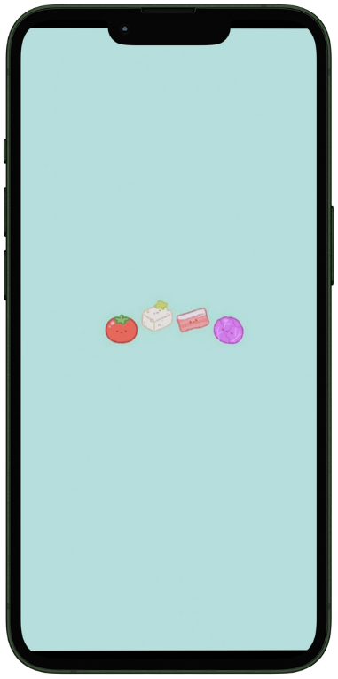
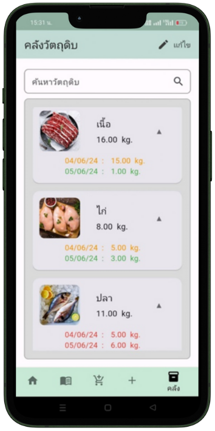
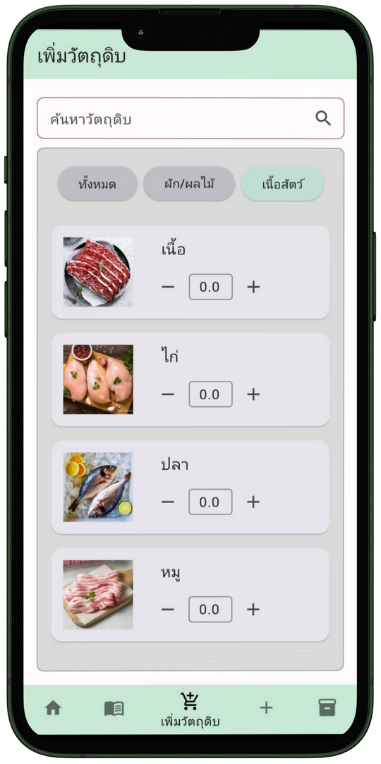
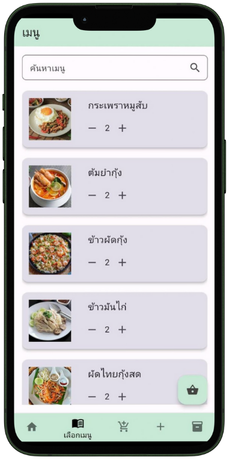
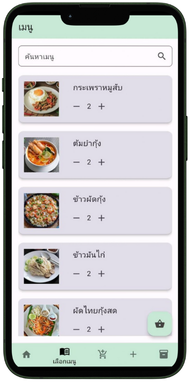
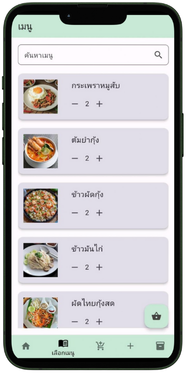

Food Waste Manager
Type: Android Application (Full-Stack)
Platform: Android
Description: พัฒนาแอปพลิเคชันบนระบบ Android เพื่อจัดการวัตถุดิบและเมนูอาหาร ลดปัญหาการสูญเสียอาหารในร้านอาหารขนาดเล็ก โดยมีฟังก์ชันตรวจสอบวัตถุดิบเพียงพอต่อออเดอร์ อัปเดตสต็อกอัตโนมัติ เพิ่มเมนูใหม่ และจัดการคลังสินค้า
My roles: รับผิดชอบ Full-Stack Development: พัฒนาระบบ Backend ทั้งหมด รวมถึงการเชื่อมต่อฐานข้อมูล และ Frontend เกือบทั้งหมด
Technologies Used:
- Flutter
- Dart
- SQLite Database
- Firebase Authentication
- Provider (State Management)
Features:
- Inventory Management
- Order stock calculation
- Automatic stock update when orders are confirmed
- Add new menu items
- Full-stack Android UI/UX development



 



Source Code / Demo: You can view the project on GitHub:
View on GitHub ← Back to Home